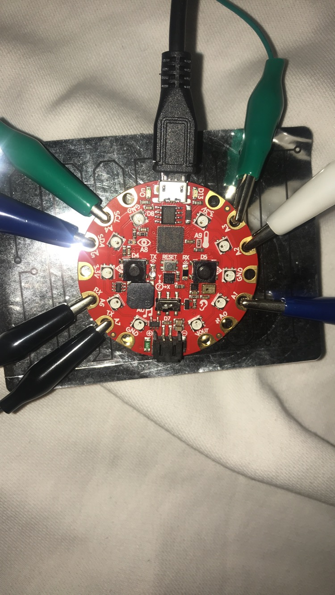

Capacitive Touch Keys
-
In order to set up our Piano keys, we need to first locate the touch pads we can use. To do
this, look on your Circuit Playground Express and find a keypad labelled "A1" all the way up
to "A7". After you locate your desired touch pads, connect the alligators clips to the touch
pads as well as connect you fruit . As shown in the picture below:

-
Since there are only seven capacitive touchpads there is an optional piece of code that creates an 8th tone. This is done by joining A2 and A3 in this certain example but it can be done with any two touch pads. See the following piece of code for reference:
elif cpx.touch_A2 and not cpx.touch_A3: cpx.pixels.fill((0, 0, 15)) cpx.start_tone(440) elif cpx.touch_A3 and not cpx.touch_A2: cpx.pixels.fill((0, 0, 15)) cpx.start_tone(494) elif cpx.touch_A2 and cpx.touch_A3: cpx.pixels.fill((0, 0, 15)) cpx.start_tone(523) -
Here is what the code for you capacitive touch pads should look like:
if cpx.touch_A4: cpx.pixels.fill((15, 0, 0)) cpx.start_tone(262) elif cpx.touch_A5: cpx.pixels.fill((15, 5, 0)) cpx.start_tone(294) elif cpx.touch_A6: cpx.pixels.fill((15, 15, 0)) cpx.start_tone(330) elif cpx.touch_A7: cpx.pixels.fill((0, 15, 0)) cpx.start_tone(349) elif cpx.touch_A1: cpx.pixels.fill((0, 15, 15)) cpx.start_tone(392) elif cpx.touch_A2 and not cpx.touch_A3: cpx.pixels.fill((0, 0, 15)) cpx.start_tone(440) elif cpx.touch_A3 and not cpx.touch_A2: cpx.pixels.fill((0, 0, 15)) cpx.start_tone(494) elif cpx.touch_A2 and cpx.touch_A3: cpx.pixels.fill((0, 0, 15)) cpx.start_tone(523)